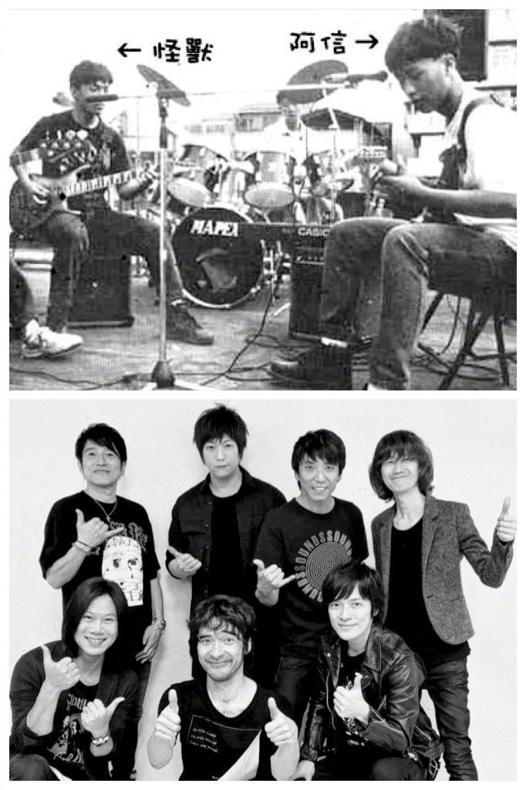

那年
我們還未組成五月天
我參加高中校內的天韻獎
以一首創作曲彈唱 拿下第二名
評審老師是一位名製作人
邀請我到他的錄音室
從來沒有看過錄音室的我 大開眼界
他說 我的吉他編的不錯 ( 你沒看錯哈哈 > v < )
他勉勵我 可以花更多的心思玩音樂
更鼓勵我 找同學一起用力玩樂團
那是 1990 年代
他說 雖然華語世界 樂團能登上主流不多
但他相信 主流音樂會慢慢改變
接著他用錄音室等級的巨型喇叭
播放了一首名為 Tomorrow Never Knows 的歌
他說 這個樂團橫掃了當時日語的音樂圈
我想
我永遠忘不了當時 第一次聽見這首歌的感動
/
但之後
沒多久我就完全忘記這件事了
學業 音樂 同學 朋友
無數青春裡的事件迎面而來
升學壓力與音樂夢想 激烈的拔河著
我們穿梭在南陽街和樂器行
後來的故事 你們也許略知
我們組了一個鳥團 取名叫五月天
寫歌 演出 組織音樂祭
20 幾年後
我們很幸運的存活了下來
而且在這段漫漫歲月中
還能夠不停的寫歌 錄音 演出
也組織了自己的唱片公司
/
忘了是哪次開會
艾姐勇志說 這個大家盼望20年的超級樂團
首肯應邀來到台北 做首次的海外演出
我的感覺跟所有孩子迷一樣
極度不真實
一直到在小巨蛋裡聽見這首歌
Tomorrow Never Knows
回憶突然嘩一聲 好像潰堤一般
整個解壓縮 無限展開
那個初次見識錄音室的 張大眼睛的少年
竟然真的玩著音樂
不知不覺地走過了一半人生
這是一段
我從來沒有想像過的歷程
Tomorrow Never Knows .
/
所有的現實
如果退回 20 幾年前那個少年的視角
都是魔幻寫實
如果不是在這個時代
如果不是因為這個時代的你們
這趟旅程不會這樣
願每個人的明天 都能往精彩離奇的未知開展
Tomorrow Never Knows
新年快樂
-
#五月天陪你守岁#
#今晚五月天陪你守歲##未來也想年年陪你守歲岁#
